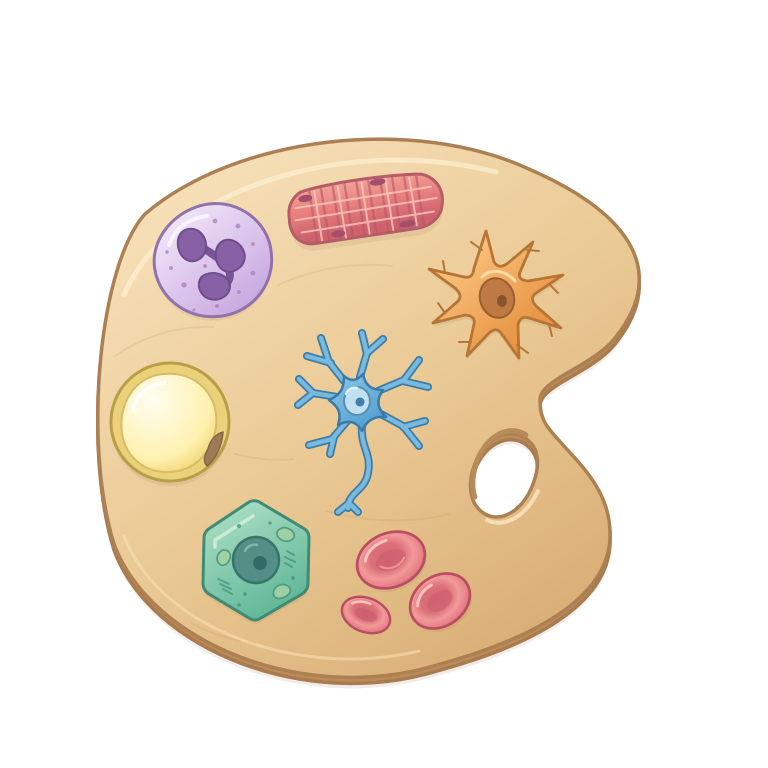

BioCartoonEffective November 18, 2026
BioCartoon is operated by Joseph Rich. The plugin helps users search a public library of scientific illustrations, inspect previews and attribution, obtain available download links, discover shared slide templates, compose figures from catalog artwork, create encrypted editor links, export SVGs, and prepare artwork contributions for human review. BioCartoon is free to use. Some host features, such as image generation, may have separate availability or account requirements set by that host.
For help, use https://github.com/josephrich98/biocartoon-app/issues. For private requests, rights complaints or requests to correct or remove a contribution, email josephrich98@gmail.com and include the relevant asset or submission ID. Do not put private information in a public issue.
Each illustration and template keeps its own stated license. Check the individual record and original source before using an item, and satisfy any attribution, ShareAlike or other conditions that apply. BioCartoon's software license does not replace these individual asset licenses. A search result is not a claim that every catalog item is CC0 or public domain.
Review artwork for scientific accuracy and suitability before using it in a publication, presentation, teaching resource or other work. Generated or adapted artwork also needs this review.
Submit artwork only when you may share it under the selected license. Provide accurate attribution and disclose whether generative AI was used. The supported contribution licenses are CC0-1.0 and CC-BY-4.0; generative-AI contributions are accepted only under CC0-1.0. An adaptation must also satisfy the original work's license and the contribution flow's compatibility checks.
Before a contribution is sent, review the artwork, metadata and license and explicitly approve the submission. Uploads enter a human review queue. A submission ID acknowledges receipt; it does not guarantee approval, publication or designation as official BioCartoon artwork. If accepted and published, the artwork is shared under its selected license and public attribution.
Do not include confidential information or personal data in artwork or public metadata. Any optional contributor email is intended for the reviewers and is handled as described in the privacy policy.
The hosted plugin currently accepts PNG or SVG submissions up to 2 MB. Other formats or resizing require preparation outside the hosted endpoint, such as through the local BioCartoon CLI. The hosted service applies request and contribution limits; an error or quota response is not confirmation of a successful submission.
Do not use the service to submit material you lack permission to share, insert executable or malicious content, bypass moderation or access controls, or disrupt other users' access. The public plugin does not provide tools to approve its own contributions, bypass another provider's licenses, or delete a user's cloud projects.
The BioCartoon privacy policy is available at https://www.biocartoon.com/privacy including the hosted MCP data flow and contribution retention. Editor links can be opened by anyone who has the complete link; share them accordingly. Accounts are not intended for children under 13, as described in that policy. ChatGPT and any other host, AI provider or linked third-party service applies its own terms and policies.
The service and its catalog may change, and free-service quotas can make a feature temporarily unavailable. Check the result of a tool call before relying on it. Updated terms will be posted here with an effective date. Questions about these terms can be sent to Joseph Rich at josephrich98@gmail.com.